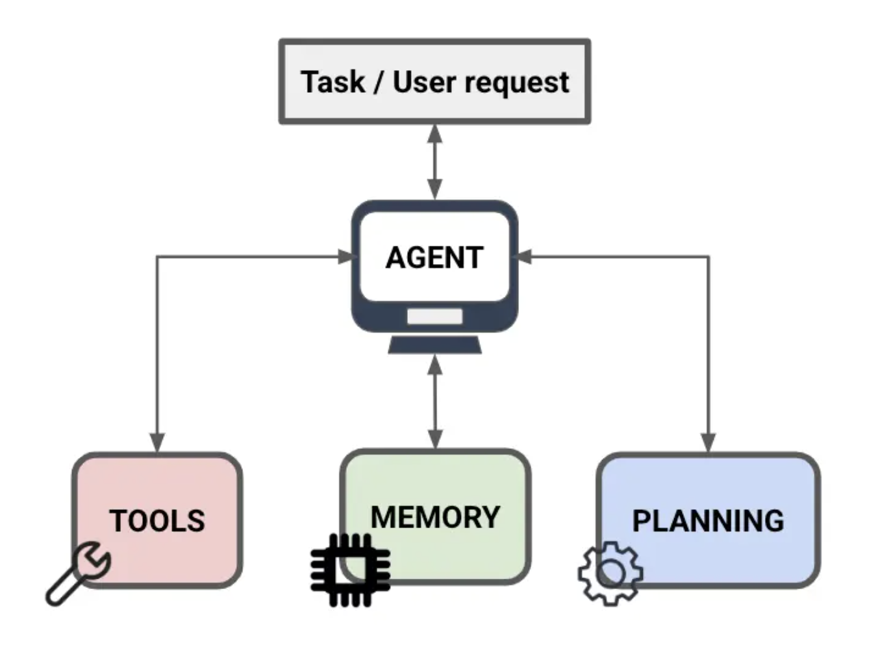

You Already Use AI Every Day. When Does It Become an Agent?
For a familiar professional request—“Read this contract and summarize the key risks.”—a strong general-purpose model is often enough.
Document
↓
GPT
↓
Summary / analysis
Modern AI can summarize, compare, extract, and reason over documents without you having to design an explicit agent system.
Not every AI task needs an agent.
When a task becomes a workflow
What changes when the work has to continue?
“Review these documents, compare them against our standards, find missing evidence, verify inconsistencies, and produce a structured report.”
Understand task
Retrieve relevant information
Plan and analyze
Use tools
Observe results
Verify / repair
Produce output
The change is not simply having multiple prompts. The system can decide what needs to happen next, use external information, retain relevant context, observe interim results, and adjust its next action.
An agent is useful when AI must manage part of the workflow, not just answer one prompt.
Core components
What Is Inside an Agent?

Planning
“What should I do next?”
Break work into steps
Choose the needed action
Decide whether more information is needed
Recognize when the task is complete
Tools
“What can I do outside the model?”
Search documents or the web
Retrieve company knowledge
Query databases or call APIs
Execute SQL
Tools let the agent act or retrieve.
Memory / context
“What must I remember while working?”
Prior findings and tool results
User, project, and document context
Workflow state
Memory provides context and state; it is not a tool.
Reasoning / planning is also different from a tool: reasoning decides what to do; tools perform or retrieve something.
Reasoning / planning THINK
Tools ACT / RETRIEVE
Memory REMEMBER / MAINTAIN STATE
Agent COORDINATE THEM
A useful distinction
So Isn’t GPT Already Doing Some of This?
Yes. Modern general-purpose AI assistants can already behave agentically by selecting tools, retrieving information, planning, and completing work in steps.
Everyday AI assistant
User request ↓ Model ├─ answer directly ├─ retrieve files if needed ├─ search if needed └─ use available tools if needed ↓ Answer
Engineered agent workflow
User request ↓ Orchestrator / agent ├─ retrieve evidence ├─ analyze documents ├─ validate findings ├─ retry if something fails └─ generate standardized output ↓ Human review
That does not mean an assistant always invokes separate hidden specialist agents. It may simply use agentic behaviors when available and useful.
The better question is: “When does a general-purpose AI assistant stop being enough for this workflow?”
A spectrum, not a contest
When does explicit agent engineering become valuable?
RepeatabilityMultiple stepsMultiple information sourcesTool useValidationTraceabilityError recoveryStandardized output
The value of an agent depends on workflow complexity and control requirements.
Transition to the lab
Text-to-SQL gives us a simple way to see this transition happen.
A simple request—“Find the third purchase for each customer.”—can begin as Question → LLM → SQL.
In a production-quality system, it gradually needs business context, retrieval, examples, planning, validation, execution, observation, repair, and evaluation.
Not every query requires every component. This is an educational reference architecture for seeing when additional agent capabilities add value.
Guided learning
Guided Stages
Build a Text-to-SQL agent one visible component at a time.
Use the same business question in every step so you can compare what each new component changes. Select a lesson below or jump directly from the left navigation.
Topic 1 — Generate better SQL
Steps 0–4 add knowledge, retrieval, examples, and a visible plan.
Step 0 · Baseline LLM
Ask the LLM for SQL
Business Question: Find the third purchase for each customer.
Scenario: An e-commerce analyst wants to identify each customer's third delivered purchase for a retention study.
What problem are we solving? The LLM receives only basic schema names. It may write valid SQL but cannot reliably infer what a customer or valid purchase means in this business.
Step 1 · Domain Knowledge
Add business definitions
Business Question: Find the third purchase for each customer.
Scenario: “Customer” should mean one person across purchases, and “purchase” should normally mean a delivered order.
What problem are we solving? The model may know SQL syntax but not the organization's vocabulary. A business glossary makes those definitions explicit.
Step 2 · RAG
Retrieve relevant context
Business Question: Find the third purchase for each customer.
Scenario: The company has many tables, definitions, and relationships, but only a few are relevant to this question.
What problem are we solving? Sending every schema and definition to the model does not scale. RAG retrieves only the useful context from ChromaDB.
Step 3 · Few-Shot Retrieval
Retrieve a similar SQL pattern
Business Question: Find the third purchase for each customer.
Scenario: A previous verified example already found each customer's second delivered purchase.
What problem are we solving? Correct schema context alone does not guarantee the correct SQL pattern. A relevant question-to-SQL example can guide the model.
Step 4 · Query Planning
Plan before generating SQL
Business Question: Find the third purchase for each customer.
Scenario: The result requires filtering delivered orders, linking each person, ordering purchases, and numbering them correctly.
What problem are we solving? Complex SQL benefits from a concise, inspectable plan. The lab displays logical steps, never hidden chain-of-thought.
Topic 2 — Trust and improve SQL
Steps 5–6 check whether generated SQL is safe and let the system learn from execution errors.
Step 5 · Validation
Validate before execution
Business Question: Find the third purchase for each customer.
Scenario: The teaching database must remain read-only even when an AI-generated query is wrong or unsafe.
What problem are we solving? Generated SQL can be unsafe or invalid. Static validation blocks mutations, and the database executes only in a read-only transaction.
Step 6 · Self-Correction
Observe errors and repair
Business Question: Find the third purchase for each customer.
Scenario: The first generated query may use a wrong column, join, or SQL expression even after validation.
What problem are we solving? The agent observes structured validation or database feedback, revises the query, and retries at most twice.
Select capabilities deliberately. Chroma-backed retrieval needs a configured Chroma server or local path; this lab will say so rather than pretend it retrieved context.
Question
Retrieve
Plan
Generate
Validate
Execute
Evaluate / Repair
Query Plan
Assumptions
Confidence: —
Generated SQL
Execution result
Run a safe query to see rows.
Benchmark evaluation
Not evaluated yet. Exact benchmark questions can be compared by execution result, not SQL string.
Agent Inspector
Educational evidence only: retrieved context, a concise plan, SQL, validation, execution, and repairs. Hidden model reasoning is never displayed.
Retrieved schema
Retrieved definitions
Retrieved SQL examples
Repair attempts
Ground truth evaluation
Measure results, not SQL spelling
For an exact benchmark question, the lab executes both the generated SQL and an evaluator-owned ground-truth query. It compares columns, rows, NULLs, numeric values with tolerance, duplicates, and (only when required) ordering.
Stage
Result accuracy
Baseline LLM
Not evaluated yet
+ Domain / RAG / Few-Shot / Planning
Run benchmark experiments to populate evidence
+ Validation / Repair
Not evaluated yet
Interpretation: PASS means equivalent results. NEAR MATCH is useful diagnostic information—not a correct answer. FAIL identifies material differences such as an incorrect join, business definition, filter, grain, or ordering.
From classroom demo to production
Architecture
See which systems are implemented in the lab and which belong in a production deployment.
Production extensionsSemantic layer · value retrieval · RBAC · cost limits · multi-turn state · monitoring · human feedback · verified queries
Schema retrieval comes from PostgreSQL information_schema, then Chroma indexes compact table documents. Keep Chroma credentials in server environment variables: CHROMA_URL, CHROMA_API_KEY, CHROMA_TENANT, and CHROMA_DATABASE. The browser never receives them.
A production Text-to-SQL agent isn’t just an LLM that writes SQL. It is a system that retrieves, understands, plans, generates, executes, validates, and improves from feedback.